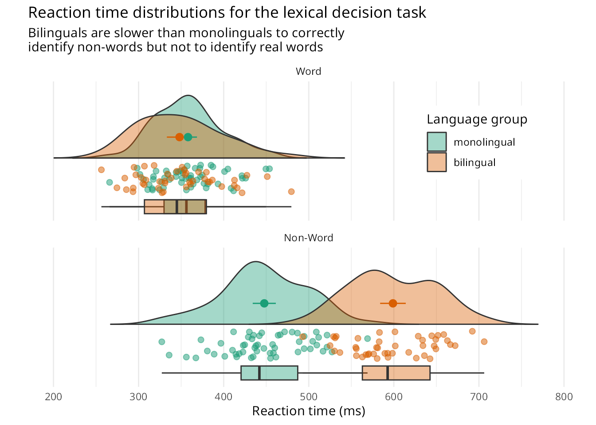

plot_raincloud.Rmd
"%||%" <- function(a, b) {
if (!is.null(a)) a else b
}
geom_flat_violin=function (mapping = NULL, data = NULL, stat = "ydensity", position = "dodge",
trim = TRUE, scale = "area", show.legend = NA, inherit.aes = TRUE,
...)
{
GeomFlatViolin <- ggplot2::ggproto("Violinist", Geom, setup_data = function(data,
params) {
data$width <- data$width %||% params$width %||% (ggplot2::resolution(data$x,
FALSE) * 0.9)
data %>% dplyr::group_by(group) %>% dplyr::mutate(ymin = min(y),
ymax = max(y), xmin = x, xmax = x + width/2) %>%
dplyr::ungroup()
}, draw_group = function(data, panel_scales, coord) {
data <- transform(data, xminv = x, xmaxv = x + violinwidth *
(xmax - x))
newdata <- rbind(plyr::arrange(transform(data, x = xminv),
y), plyr::arrange(transform(data, x = xmaxv), -y))
newdata <- rbind(newdata, newdata[1, ])
ggplot2:::ggname("geom_flat_violin", ggplot2::GeomPolygon$draw_panel(newdata,
panel_scales, coord))
}, draw_key = draw_key_polygon, default_aes = aes(weight = 1,
colour = "grey20", fill = "white", size = 0.5, alpha = NA,
linetype = "solid"), required_aes = c("x", "y"))
layer(data = data, mapping = mapping, stat = stat, geom = GeomFlatViolin,
position = position, show.legend = show.legend, inherit.aes = inherit.aes,
params = list(trim = trim, scale = scale, ...))
}
rain_height <- .1
ggplot(data_ldt, aes(x = "", y = rt, fill = language)) +
# clouds
geom_flat_violin(trim=FALSE, alpha = 0.4, position = position_nudge(x = rain_height+.05)) +
# rain
geom_point(aes(colour = language), size = 2, alpha = .5, show.legend = FALSE, position = position_jitter(width = rain_height, height = 0)) +
# boxplots
geom_boxplot(width = rain_height, alpha = 0.4, show.legend = FALSE, outlier.shape = NA, position = position_nudge(x = -rain_height*2)) +
# mean and SE point in the cloud
stat_summary(fun.data = mean_cl_normal, mapping = aes(color = language), show.legend = FALSE, position = position_nudge(x = rain_height * 3)) +
# adjust layout
scale_x_discrete(name = "", expand = c(rain_height*3, 0, 0, 0.7)) +
scale_y_continuous(name = "Reaction time (ms)", breaks = seq(200, 800, 100), limits = c(200, 800)) +
coord_flip() +
facet_wrap(~factor(condition, levels = c("word", "nonword"), labels = c("Word", "Non-Word")), nrow = 2) +
# custom colours and theme
scale_fill_brewer(palette = "Dark2", name = "Language group") +
scale_colour_brewer(palette = "Dark2") +
theme_minimal() +
theme(panel.grid.major.y = element_blank(), legend.position = c(0.8, 0.8), legend.background = element_rect(fill = "white", color = "white"))+
labs(title="Reaction time distributions for the lexical decision task",
subtitle = "Bilinguals are slower than monolinguals to correctly\nidentify non-words but not to identify real words")
#> Warning: Removed 10 rows containing missing values (`violinist()`).
#> Warning: Using the `size` aesthetic with geom_polygon was deprecated in ggplot2 3.4.0.
#> ℹ Please use the `linewidth` aesthetic instead.
#> This warning is displayed once every 8 hours.
#> Call `lifecycle::last_lifecycle_warnings()` to see where this warning was
#> generated.